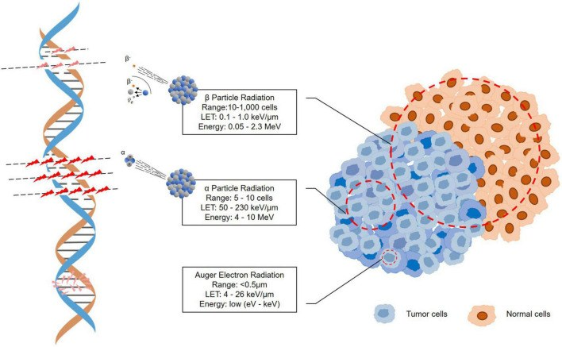
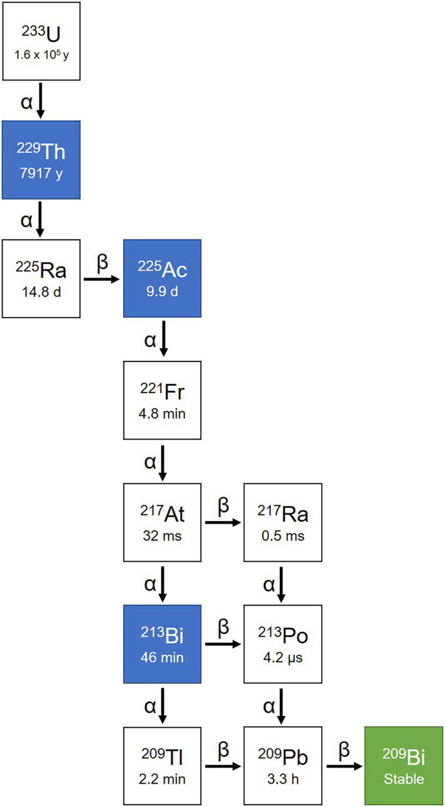
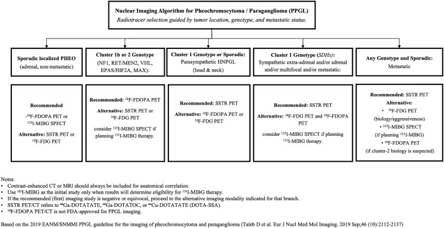
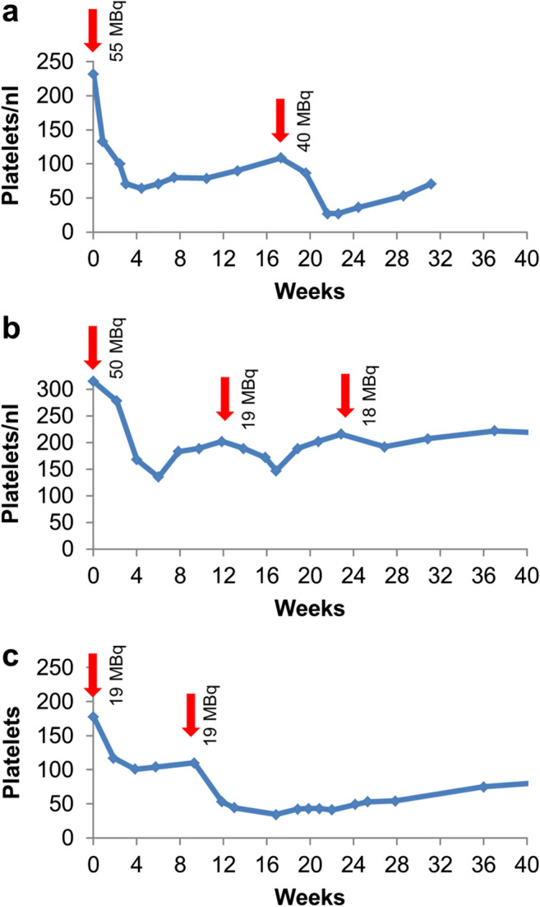
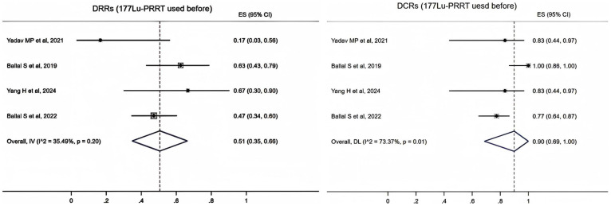

1695 — ²²⁵Ac-DOTATATE (xạ trị hạt alpha) sau thất bại ¹⁷⁷Lu ở PPGL: chọn bệnh nhân theo SSTR/FDG, liều, độc thận–tủy và khi nào chuyển / ²²⁵Ac-DOTATATE targeted alpha therapy after ¹⁷⁷Lu-PRRT failure in pheochromocytoma–paraganglioma
Tags: pattern:ppgl-di-can pattern:xa-tri-hat-alpha pattern:khang-lu177 vung:thuong-than vung:paraganglia score:RECIST protocol:PRRT-alpha protocol:dosimetry incidentaloma:khong
Mức chắc chắn (certainty): tổng hợp y văn (literature synthesis) — tự biên từ 1 phi cứu (pilot) 9 ca PPGL dùng ²²⁵Ac-DOTATATE (PMC8626283), 1 phân tích gộp 5 nghiên cứu/153 bệnh nhân NEN (PMC12615221), 1 nghiên cứu liều – độc tính 5 năm trên 39 bệnh nhân (PMC8712294), 1 tổng quan cơ chế hạt alpha (PMC9767967) và 1 tổng quan PPGL 2026 (PMC13428017). Chưa có RCT; mọi con số đáp ứng là của loạt nhỏ, phần chưa có bằng chứng ghi rõ "chưa rõ".
Câu chốt: hạt alpha không phải "¹⁷⁷Lu mạnh hơn" — nó là một liệu pháp khác về mặt vật lý: quãng chạy 47–85 µm (5–10 đường kính tế bào) nên không có hiệu ứng cross-fire, diệt được tế bào đói oxy và kháng xạ, nhưng không "phủ" được u lớn không đồng nhất và không có liều an toàn tuyệt đối cho thận/tủy. Ở PPGL, chỉ định hợp lý là u còn bắt SSTR mạnh sau khi ¹⁷⁷Lu thất bại, và quyết định phải trả lời được 3 câu: SSTR còn không? Đã chặn alpha đủ chưa? Còn dư địa tủy–thận không?
1. Tổng quan bệnh học – cơ chế hình ảnh
- Vì sao ¹⁷⁷Lu thất bại (β-PRRT resistance): ¹⁷⁷Lu phát hạt β với quãng chạy trong mô mềm 0,28 mm (trung bình) đến 1,8 mm (tối đa), LET 0,1–1 keV/µm — tức là 10.000–1.000.000 "đường kính tế bào" (Hình 1, PMC9767967). Muốn diệt u, β phải bắt đủ liều qua cross-fire từ các tế bào lân cận bắt thuốc; khi u giảm biểu hiện SSTR không đồng nhất, giảm tưới máu, hoặc đã nhận liều tích lũy cao (4 chu kỳ 7,4 GBq = 29,6 GBq), các ổ thiếu thuốc trở thành nơi tái phát. Ở PPGL, PRRT β cho DCR ~80–90%, PFS trung vị ~17–39 tháng; trong pha II tại NIH (n = 36 đánh giá được): PFS 6 tháng 86%, PFS trung vị 20 tháng, PR 14% lúc kết thúc điều trị → 28% khi theo dõi, thể lẻ tẻ 24,3 tháng vs SDHx 12,9 tháng (PMC13428017).
- Vì sao hạt alpha khác về bản chất: ²²⁵Ac có T½ = 9,9 ngày, phát hạt alpha 5,8–8,4 MeV, quãng chạy 47–85 µm, LET ~50–230 keV/µm (≈100) — gấp hàng trăm lần LET của β (PMC12615221, PMC9767967). Hệ quả lâm sàng:
- Diệt cả tế bào đang đói oxy và tế bào không phân chia — vì tổn thương DNA là đứt sợi đôi (DSB) không sửa được, không phụ thuộc chu kỳ tế bào.
- Không cross-fire: 1 tế bào bắt thuốc chỉ "cứu" được vùng 5–10 tế bào quanh nó → hiệu quả phụ thuộc mật độ biểu hiện SSTR, và u lớn/hoại tử trung tâm có thể chỉ "sạch" ở viền.
- Chuỗi phân rã có 4 hạt alpha (²²⁵Ac → ²²¹Fr → ²¹⁷At → ²¹³Bi → ²⁰⁹Pb → ²⁰⁹Bi, Hình 2) — nghĩa là mỗi phân tử thuốc bắn 4 lần, nhưng cũng là nguồn độc tính ngoài u (xem dưới).
- Hiệu ứng giật lùi (recoil): năng lượng giật lùi của hạt nhân con lớn hơn năng lượng liên kết hóa học hàng nghìn lần, nên ²²¹Fr/²¹³Bi bị bắn khỏi chelate rồi tái phân bố vào thận và xương — đây là lý do không thể chỉ dựa vào "độ bền chelate" để bảo vệ cơ quan đích (PMC9767967, PMC12176933, PMC13428017).
- Ngưỡng định lượng nằm lòng:
- Điều kiện vào (Yadav 2022, PMC8626283): SSTR-PET Krenning > 3 (độ bắt > gan); Hb ≥ 9,5 g/dL, tiểu cầu ≥ 60.000/µL, TLC ≥ 3.000/µL, creatinin ≤ 1,4 mg/dL, bilirubin ≤ 1,2 mg/dL, KPS ≥ 40, ECOG ≤ 3.
- Liều trong phi cứu: 100 kBq/kg (≈ 2,7 µCi/kg) mỗi chu kỳ, cách nhau 8 tuần, tổng tích lũy 42,4 ± 27 MBq (15,54–86,6 MBq), trung vị 3 chu kỳ (2–9); dừng khi tiến triển hoặc đạt 86,6 MBq (2,34 mCi).
- Ngưỡng độc tủy (Kratochwil 2021, n = 39, PMC8712294): liều đơn ≤ 44 MBq chỉ gây độc độ 0–2; > 45 MBq xuất hiện độ 3; độ 4 đầu tiên ở ~60 MBq. Nadir tiểu cầu/bạch cầu 4–6 tuần, hồi phục ~12 tuần. Liều ~20 MBq/chu kỳ, lặp mỗi 4 tháng, tổng 60–80 MBq "tránh được độc tủy độ 3/4".
- Ngưỡng độc thận: eGFR giảm 8,4 mL/phút (9,9%) mỗi năm — tương đương β-PRRT, không theo quan hệ liều – đáp ứng rõ; 2/39 ca suy thận sau > 4 năm, nhưng đều có yếu tố nguy cơ thận sẵn có (PMC8712294). Nghĩa là không có "liều thận an toàn" chung, chỉ có liều cá thể hóa + theo dõi.
- Hiệu quả (số nhỏ, đọc thận trọng): phi cứu 9 ca PPGL — PR 50% (4/8), SD 37,5% (3/8), PD 12,5% (1/8), DCR 87,5%; ở nhóm kháng ¹⁷⁷Lu: DCR 66,6%; KPS 60 ± 7 → 85 ± 5 (p = 0,0050) ở nhóm PR; thuốc hạ áp ngừng hoàn toàn 25% (2/8), giảm liều 37,5% (3/8), trung vị 6 tháng mới giảm được liều (PMC8626283). Phân tích gộp 5 nghiên cứu/153 bệnh nhân NEN: DRR 52% (95% CI 43–61), DCR 88% (81–94), độc tủy 2%, không có độ 3/4; nhóm đã dùng ¹⁷⁷Lu: DRR 51% (35–66), DCR 90% (69–100) (PMC12615221).
2. Mẫu hình + chẩn đoán phân biệt theo "kiểu thất bại" của ¹⁷⁷Lu (gamut)
- Nhóm A — tiến triển nhưng SSTR còn mạnh (Krenning ≥ 3, FDG thấp/vừa): ứng viên tốt nhất cho alpha; u chậm phát triển nhưng không kiểm soát được bằng β.
- Nhóm B — bắt thuốc không đồng nhất (SSTR+ ở một số ổ, FDG+ ở ổ khác): alpha có thể kiểm soát ổ SSTR+, nhưng ổ FDG-only sẽ tiếp tục tiến triển → phải đo tổn thương đích riêng từng ổ, không đọc "đáp ứng chung".
- Nhóm C — PPGL có chức năng, huyết áp không kiểm soát dù đã chặn alpha: alpha có thể giảm tiết catecholamine (25% ngừng thuốc hạ áp trong phi cứu), nhưng nguy cơ cơn catecholamine khi truyền 17–18% — phải tối ưu chẹn alpha trước, và tránh dexamethasone ở ca tiết mạnh.
- Nhóm D — tổn thương lớn, hoại tử, gan > 50%: không phải ứng viên tốt (thiếu cross-fire, nguy cơ hoại tử/ly giải, chức năng gan–thận hạn chế) → cân nhắc TARE/đốt, CVD, hoặc theo dõi.
- Gamut "không phải alpha": ¹⁷⁷Lu re-challenge (khi PFS đầu > 12–18 tháng và SSTR còn), ¹³¹I-MIBG hoạt độ cao (khi MIBG+ và SSTR yếu), CVD (cyclophosphamide–vincristine–dacarbazine) khi tiến triển nhanh, sunitinib, TARE cho gan ưu thế, xạ trị ngoài cho ổ đau/đe dọa tủy.
- Gợi nhớ 4 câu hỏi trước khi ký chỉ định: SSTR còn? FDG lan rộng? Hormone kiểm soát? Reserve tủy–thận còn? (S-F-H-R).
3. Bảng so sánh phân biệt (ma trận đối chiếu)
| Thực thể (entity) | Hình ảnh / dữ liệu điển hình | Chốt vào (rule-in) | Chốt loại (rule-out) | Gợi ý xác nhận |
|---|---|---|---|---|
| ²²⁵Ac-DOTATATE | SSTR-PET còn Krenning ≥ 3 sau ¹⁷⁷Lu; CT: giảm kích thước tổn thương đích dần sau 2–3 chu kỳ; PET có thể giảm bắt thuốc mạnh hơn mức co nhỏ trên CT | Tiến triển trên ¹⁷⁷Lu + SSTR còn mạnh + tủy–thận đủ dư địa | SSTR âm/FDG-only, tủy hoặc thận đã cạn dự trữ, u hoại tử lớn chiếm ưu thế | SSTR-PET + FDG-PET, CBC/eGFR, RECIST 1.1 mỗi 2–3 chu kỳ |
| ¹⁷⁷Lu re-challenge | Bắt thuốc đồng nhất, PFS đầu dài; đáp ứng chậm | PFS đầu > 12–18 tháng, SSTR còn, chưa chạm trần liều β | Tiến triển nhanh trong 6–12 tháng đầu, SSTR giảm | Đối chiếu liều tích lũy β đã nhận, thời gian PFS |
| ¹³¹I-MIBG hoạt độ cao | MIBG+ / SSTR yếu; bắt thuốc ở gan–tủy; phải phong bế giáp | MIBG dương mạnh, SSTR âm hoặc đã kháng β | MIBG âm, suy tủy nặng, cần cách ly không khả thi | ¹²³I-MIBG SPECT/CT; TSH trước–sau |
| CVD (hóa trị) | Tiến triển nhanh, u kém biệt hóa, FDG rất cao | Tiến triển trong vài tháng + FDG cao + SSTR yếu | SSTR còn mạnh, bệnh chậm → ưu tiên RLT | CT 2–3 chu kỳ; độc tủy, buồn nôn |
| Sunitinib | U tiến triển, nhiều ổ; đáp ứng chủ yếu ổn định bệnh | SSTR yếu + không dung nạp hóa trị | Suy giáp/tăng HA khó kiểm soát, hội chứng bàn tay–chân nặng | CT 3 tháng; TSH, HA |
| Tổn thương "bùng" sau chu kỳ 1 (giả tiến triển/hoại tử) | CT: ổ tăng kích thước nhưng giảm tỷ trọng, PET giảm bắt thuốc | PET giảm trong khi CT tăng | CT và PET cùng tăng → tiến triển thật | Lặp CT+PET sau 6–8 tuần, không đổi phác đồ sớm |

Hình 1 — ba loại bức xạ: β đi qua 10.000–1.000.000 đường kính tế bào (LET 0,1–1 keV/µm, cần cross-fire); α chỉ 5–10 đường kính tế bào (LET 50–230 keV/µm) nên diệt tại chỗ nhưng không "phủ" u lớn; electron Auger < 0,5 µm. Nguồn: Shi M et al., Front Med 2022 (PMC9767967) Fig. 3, CC BY.
Hình 2 — chuỗi phân rã ²²⁵Ac → ²²¹Fr (4,8 phút) → ²¹⁷At (32 ms) → ²¹³Bi (46 phút) → ²⁰⁹Pb (3,3 giờ) → ²⁰⁹Bi bền: 4 hạt alpha mỗi chuỗi, nhưng hạt nhân con giật lùi khỏi chelate rồi tái phân bố vào thận/xương. Nguồn: Shi M et al., Front Med 2022 (PMC9767967) Fig. 4, CC BY.4. Protocol chụp – điều trị – theo dõi + phân độ
- Trước chỉ định (bắt buộc): SSTR-PET/CT (⁶⁸Ga-DOTATATE/DOTATOC) + ¹⁸F-FDG-PET/CT cùng đợt — SSTR để chọn thuốc, FDG để biết u nào sẽ không đáp ứng; theo genotype: SDHx → SSTR mạnh + FDG mạnh, VHL/EPAS1 & cluster 2 → ¹⁸F-FDOPA ưu tiên (PMC13428017, Hình 5).
- Sàng lọc trước mỗi chu kỳ: CBC, creatinin/eGFR, điện giải, AST/ALT/bilirubin, metanephrine tự do, thử thai; chẹn alpha đủ 1–2 tuần (phenoxybenzamine/doxazosin) + bù thể tích.
- Bảo vệ thận: lysine 23,3 g + arginine 8 g trong 1 L, truyền 4 giờ, bắt đầu 30 phút trước ²²⁵Ac-DOTATATE (PMC8626283); chống nôn ondansetron ± dexamethasone — cân nhắc bỏ dexamethasone ở PPGL có chức năng (phi cứu đã bỏ ở 3 ca thể giao cảm).
- Trong truyền: theo dõi HA/nhịp mỗi 15 phút; ngưỡng dừng/giảm tốc: HA tâm thu > 200 mmHg dù đã chặn alpha, loạn nhịp, phù phổi; sẵn sàng phentolamine/nicardipine; truyền chậm nếu có tim đập nhanh (đã gặp 1 ca, xử trí bằng chẹn beta + giảm tốc độ).
- Sau chu kỳ: CBC + KFT + LFT ở 2, 4, 8 tuần (nadir 4–6 tuần); đánh giá hình ảnh sau 2–3 chu kỳ và mỗi 3 tháng sau kết thúc; RECIST 1.1 trên CT không cản quang + PET cùng lúc.
- Trần liều thực dụng (từ dữ liệu hiện có): ≤ 44 MBq/liều đơn, ~20 MBq/chu kỳ mỗi 4 tháng, tổng 60–80 MBq nếu mục tiêu là tránh độc tủy độ 3/4; không có trần thận tuyệt đối — quyết định theo eGFR nền và tốc độ giảm (mất 8,4 mL/phút/năm là mức tham chiếu).
- Phân độ: dùng CTCAE v5.0 cho tủy/thận/gan và RECIST 1.1 cho đáp ứng; không dùng thay đổi SUV trên PET làm tiêu chuẩn đáp ứng duy nhất (SSTR có thể giảm do hiệu ứng điều trị, không đồng nghĩa u chết).
flowchart TD
A[PPGL tiến triển sau 177Lu-PRRT] --> B{SSTR-PET còn Krenning ≥ 3?}
B -->|Không| C[Không dùng alpha<br/>chuyển MIBG / CVD / TARE / theo dõi]
B -->|Có| D{FDG lan rộng hơn SSTR?}
D -->|Có, nhiều ổ FDG-only| E[Cân nhắc phối hợp / ưu tiên ổ nguy hiểm<br/>kỳ vọng đáp ứng một phần]
D -->|Không| F{Tủy & thận đủ dư địa?}
F -->|Không| C
F -->|Có| G[Chẹn alpha đủ + bù thể tích]
G --> H[225Ac-DOTATATE ~100 kBq/kg<br/>q8 tuần + lysine/arginine]
H --> I[CBC/KFT/LFT 2-4-8 tuần]
I --> J{Độc tủy độ 3-4?}
J -->|Có| K[Hoãn, giảm liều hoặc dừng<br/>không vượt 44 MBq/liều]
J -->|Không| L[CT + PET sau 2-3 chu kỳ]
L --> M{Tiến triển?}
M -->|Không| H
M -->|Có| N[Dừng alpha, chuyển phác đồ khác]

Hình 5 — chọn thuốc theo vị trí – genotype – giai đoạn: thể lẻ tẻ tại tuyến thượng thận → ¹⁸F-FDOPA/MIBG; SDHB và thể lan tỏa → SSTR-PET là nền tảng, FDG bổ trợ; chỉ khi SSTR dương mới có cửa cho PRRT (β hoặc α). Nguồn: Hernandez-Felix JH et al., Endocr Relat Cancer 2026 (PMC13428017) Fig. 1, CC BY 4.0.5. Biến thể bình thường và cạm bẫy
- Cạm bẫy 1 — "alpha mạnh hơn nên thay β ở mọi ca": sai. Không có cross-fire → u lớn, hoại tử, bắt thuốc không đồng nhất đáp ứng kém hơn β; alpha hợp với ổ nhỏ, lan tỏa, đã kháng β.
- Cạm bẫy 2 — đọc đáp ứng chỉ bằng PET: SUV giảm không đồng nghĩa u chết (giảm biểu hiện SSTR sau điều trị), và CT tăng trong 6–8 tuần đầu có thể là hoại tử/giả tiến triển. Luôn đối chiếu CT + PET cùng thời điểm.
- Cạm bẫy 3 — bỏ qua "con gái" của ²²⁵Ac: ²²¹Fr/²¹³Bi thoát chelate → thận và xương nhận liều ngoài dự kiến; không thể suy ra liều thận từ hoạt độ tiêm — cần dosimetry nếu có, và theo dõi eGFR hằng năm dù bệnh nhân "ổn".
- Cạm bẫy 4 — dùng dexamethasone "cho chắc" ở PPGL tiết catecholamine: có thể làm nặng cơn tăng huyết áp; ưu tiên chẹn alpha đủ + chống nôn không steroid.
- Cạm bẫy 5 — coi "không độc độ 3/4" trong loạt nhỏ là bằng chứng an toàn: phi cứu 9 ca không ghi nhận độ 3/4, nhưng loạt 39 ca của ²²⁵Ac-DOTATOC cho thấy độ 3 xuất hiện khi > 45 MBq/liều và độ 4 ở ~60 MBq — an toàn phụ thuộc liều và khoảng cách, không phải bản chất thuốc.
- Cạm bẫy 6 — bỏ qua nguồn cung: ²²⁵Ac khan hiếm, chuỗi cung ứng giới hạn; đừng hứa "sẽ có thuốc" khi chưa xác nhận lịch sản xuất (PMC13428017).
- Biến thể bình thường dễ nhầm: bắt thuốc sinh lý ở lách, gan, tuyến yên, tuyến thượng thận còn lại trên SSTR-PET; tăng bắt thuốc ở thận sau truyền acid amin; hoạt độ trong bàng quang — không đọc là di căn.
6. Tự lượng giá — Blind Quiz
Ca 1 — BN 41 tuổi, PGL thể cảnh trái đã mổ + xạ trị, tiến triển sau 6 chu kỳ ¹⁷⁷Lu-DOTATATE. Nhìn Hình 1, giải thích vì sao chuyển hạt alpha.
- Gợi ý: u đã nhận 34,5 GBq ¹⁷⁷Lu và vẫn tiến triển.
- Câu hỏi: vì sao β thất bại dù SSTR còn? Alpha giải quyết được gì và không giải quyết được gì?
Bấm để hiện đáp án (findings + chẩn đoán)
- β cần cross-fire: quãng chạy 10.000–1.000.000 đường kính tế bào, LET 0,1–1 keV/µm → ổ thiếu thuốc/đói oxy sống sót và tái phát.
- α diệt tại chỗ: 47–85 µm, LET ~100 keV/µm → hiệu quả cả trên tế bào đói oxy, không phân chia.
- Nhưng α không phủ u lớn: chỉ 5–10 đường kính tế bào → phải còn SSTR đồng nhất; u hoại tử lớn vẫn là giới hạn.
- Nguồn ảnh: Shi M et al., Front Med 2022, PMC9767967 Fig. 3, CC BY.
Ca 2 — Cùng bệnh nhân, sau 3 chu kỳ ²²⁵Ac-DOTATATE: creatinin tăng nhẹ, tiểu cầu 88 G/L. Nhìn Hình 2 và Hình 3, quyết định chu kỳ 4?

- Gợi ý: panel (a) là các liều 55 → 40 MBq, panel (b) 50 → 19 → 18 MBq cách 3–4 tháng, panel (c) 19 → 19 MBq cách 2 tháng.
- Câu hỏi: panel nào cho thấy độc tính cộng dồn? Ngưỡng hoạt độ nào làm xuất hiện độ 3?
Bấm để hiện đáp án
- Panel (a): 55 MBq → tiểu cầu 235 → ~55 G/L ở tuần 4–5, rồi 40 MBq → nadir ~30 G/L = cộng dồn.
- Panel (b): các liều < 25 MBq cách 3–4 tháng dung nạp được, không cộng dồn; panel (c): cách 2 tháng thì < 25 MBq vẫn cộng dồn.
- Ngưỡng: liều đơn ≤ 44 MBq → độ 0–2; > 45 MBq → độ 3; ~60 MBq → độ 4. Nadir 4–6 tuần, hồi phục ~12 tuần.
- Quyết định: tiểu cầu 88 G/L (độ 1) + creatinin tăng nhẹ → hoãn 2–4 tuần, giữ liều ≤ 20–25 MBq, giãn khoảng cách ≥ 4 tháng, kiểm tra nguyên nhân thận khác (mất nước, cản quang, thuốc) trước khi quy cho phóng xạ.
- Nguồn ảnh: Kratochwil C et al., Eur J Nucl Med Mol Imaging 2021, PMC8712294 Fig. 1, CC BY 4.0.
Ca 3 — Hội chẩn: "Bệnh nhân đã kháng ¹⁷⁷Lu, cho alpha thì bao nhiêu % đáp ứng?" Nhìn Hình 4.

- Gợi ý: 4 nghiên cứu, nhóm đã dùng ¹⁷⁷Lu trước đó.
- Câu hỏi: DRR và DCR gộp là bao nhiêu? Vì sao DCR cao hơn DRR nhiều?
Bấm để hiện đáp án
- DRR 51% (95% CI 35–66), DCR 90% (69–100) ở nhóm đã dùng ¹⁷⁷Lu; toàn bộ 153 bệnh nhân: DRR 52% (43–61), DCR 88% (81–94), độc tủy 2%, không độ 3/4.
- Vì sao DCR ≫ DRR: PPGL phát triển chậm, phần lớn đạt ổn định bệnh — lợi ích thật nằm ở kiểm soát bệnh + triệu chứng (KPS, đau, huyết áp), không phải co nhỏ khối.
- Phản biện nguồn: phi cứu PPGL báo DCR 66,6% (2/3) ở nhóm kháng ¹⁷⁷Lu trong phần tóm tắt, nhưng phần kết quả lại mô tả 1 PR + 2 SD + 1 PD trong 4 ca — nội bộ bài gốc không nhất quán; trích nguyên văn, không "làm tròn" thành 75%.
- Nguồn ảnh: Ma J et al., Front Oncol 2025, PMC12615221 Fig. 3, CC BY.
Bài liên quan chéo
- 177 – Điều trị & theo dõi PPGL: chẹn alpha, phẫu thuật, PRRT/MIBG
- 185 – Độc tính & theo dõi sau PRRT/¹³¹I-MIBG ở PPGL
- 168 – U tủy thượng thận & u cận hạch
- 100 – Tổng quan hệ Bụng
Ảnh
- 5 ảnh lấy từ Europe PMC/PMC bản open access, giữ nguyên bản (không crop, không ghép); nguồn – giấy phép từng file trong
images/CREDITS.md. - Tên file:
1695_ac225_<nội dung>_<loại>_PMC<ID>-Fig<k>.jpg.
Không dùng để chẩn đoán độc lập khi chưa có người hướng dẫn.